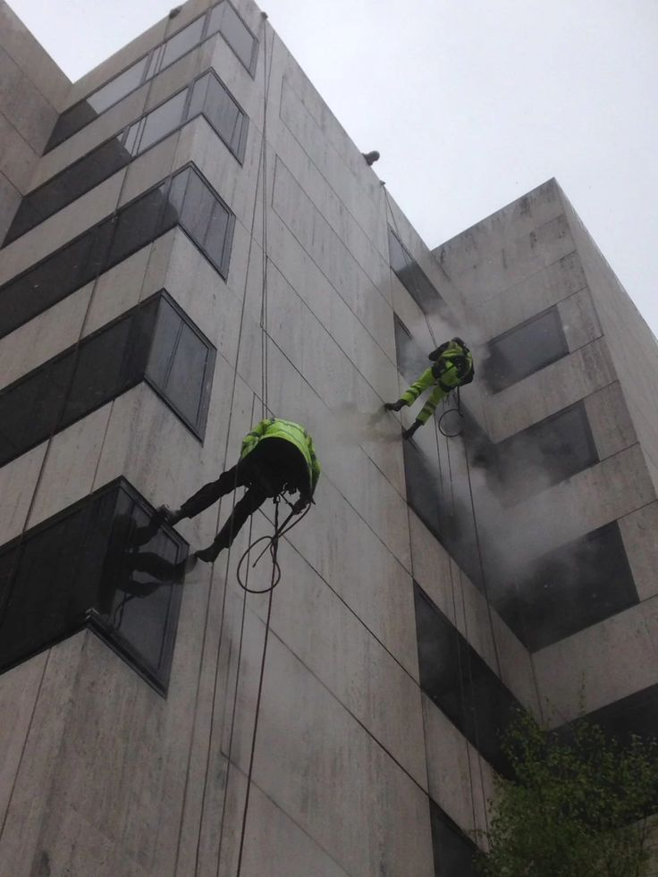
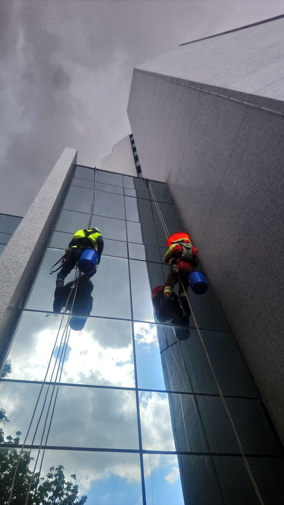

تعد نظافة الواجهات من أهم العوامل التي تعكس جمال المباني وتعطي الانطباع الأول عن المنزل أو الفيلا أو الشركة أو المركز التجاري. ومع طبيعة الأجواء في مدينة الرياض، وما تشهده المناطق الجنوبية من غبار وأتربة مستمرة، أصبحت الحاجة إلى شركة تنظيف واجهات بجنوب الرياض أمرًا ضروريًا للحفاظ على المظهر الخارجي للمبنى وإطالة عمر الواجهات مهما كان نوعها.
ويبحث الكثير من العملاء عن شركة تنظيف واجهات بالرياض تمتلك الخبرة والمعدات الحديثة التي تضمن إزالة جميع الأوساخ والبقع دون التأثير على خامة الواجهة. ولهذا تقدم شركة حلول وتميز للتنظيف حلولًا احترافية تعتمد على أحدث المعدات ومواد التنظيف الآمنة التي تناسب جميع أنواع الواجهات.
كما توفر شركة حلول وتميز لخدمات التنظيف فريقًا متخصصًا في تنظيف واجهات الفلل والقصور والمباني التجارية والأبراج والمحلات، مع الالتزام بأعلى معايير الجودة والسلامة. ويعمل فريق حلول وتميز للتنظيف وفق خطة مدروسة تبدأ بفحص الواجهة واختيار الطريقة المناسبة للتنظيف، ثم تنفيذ العمل بدقة للحصول على أفضل النتائج.
إذا كنت تبحث عن تنظيف واجهات بجنوب الرياض باحترافية أو ترغب في التعامل مع شركة تنظيف واجهات تقدم خدمة متكاملة وبجودة عالية، فإن خبراء حلول وتميز للتنظيف يقدمون خدمات تناسب جميع أنواع الواجهات مع الاهتمام بأدق التفاصيل.

فريق حلول وتميز أثناء تنظيف واجهات مبنى مرتفع في جنوب الرياض بأحدث المعدات
لماذا تحتاج إلى تنظيف الواجهات بشكل دوري؟
قد يعتقد البعض أن تنظيف الواجهة يهدف فقط إلى تحسين الشكل الخارجي، لكن الحقيقة أن فوائد التنظيف الدوري أكبر من ذلك بكثير.
يساعد تنظيف واجهات بالرياض بشكل منتظم على إزالة الأتربة والملوثات التي تتراكم مع مرور الوقت، كما يحافظ على لون الواجهة ويقلل من تأثير العوامل الجوية مثل أشعة الشمس والغبار والأمطار.
وتوضح شركة حلول وتميز للتنظيف أن الإهمال في تنظيف الواجهات قد يؤدي إلى تراكم البقع والأملاح والرواسب، وهو ما يجعل عملية التنظيف لاحقًا أكثر صعوبة وتكلفة. كما تؤكد شركة حلول وتميز لخدمات التنظيف أن الصيانة الدورية تساهم في إطالة العمر الافتراضي للواجهة والحفاظ على قيمتها الجمالية، سواء كانت واجهة زجاجية أو حجرية أو كلادنج.
لماذا تتسخ الواجهات بسرعة في جنوب الرياض؟
تتعرض المباني في جنوب الرياض لعدة عوامل تؤثر على نظافة الواجهات، ولهذا يزداد الطلب على شركة تنظيف واجهات بجنوب الرياض القادرة على التعامل مع مختلف أنواع الاتساخات. ومن أبرز الأسباب:
- العواصف الترابية المتكررة
- الأتربة الدقيقة التي تلتصق بالزجاج والحجر
- عوادم السيارات
- الرطوبة في بعض المواسم
- الأمطار التي تترك آثارًا على الواجهات
- تراكم الأوساخ مع مرور الوقت
ولهذا تنصح شركة تنظيف واجهات بالرياض بعدم الانتظار حتى تتراكم الأوساخ بشكل كبير، بل إجراء تنظيف دوري للحفاظ على مظهر المبنى.
أنواع الواجهات التي نقوم بتنظيفها
تمتلك شركة حلول وتميز للتنظيف خبرة واسعة في تنظيف جميع أنواع الواجهات، مع اختيار الطريقة المناسبة لكل خامة.
أولًا: تنظيف الواجهات الزجاجية
يعد تنظيف واجهات زجاج بالرياض من أكثر الخدمات طلبًا، خاصة في الأبراج الإدارية والمباني الحديثة التي تعتمد على الزجاج الخارجي. وتستخدم شركة حلول وتميز لخدمات التنظيف أدوات احترافية تساعد على إزالة الغبار وبقع الأمطار وآثار التلوث دون ترك خطوط أو خدوش على الزجاج. كما يعتمد فريق حلول وتميز للتنظيف على مواد تنظيف مخصصة للزجاج تمنحه لمعانًا يدوم لفترة أطول، مع مراعاة الحفاظ على الإطارات المعدنية والمواد المحيطة بالواجهة.
ثانيًا: تنظيف الواجهات الحجرية
تحتاج الواجهات الحجرية إلى خبرة خاصة، لأن استخدام مواد غير مناسبة قد يؤثر في لون الحجر أو ملمسه. ولهذا تقدم شركة تنظيف واجهات بالرياض خدمات تنظيف واجهات حجر بالرياض باستخدام تقنيات آمنة تناسب الحجر الطبيعي والصناعي. ويقوم خبراء حلول وتميز للتنظيف بفحص نوع الحجر قبل البدء، ثم اختيار مواد التنظيف المناسبة لإزالة الأتربة والأملاح والبقع دون التأثير على جودة الواجهة.
ثالثًا: تنظيف واجهات الكلادنج
أصبحت واجهات الكلادنج من أكثر أنواع الواجهات استخدامًا في الشركات والمراكز التجارية، ولذلك توفر شركة حلول وتميز للتنظيف خدمة تنظيف واجهات كلادنج بالرياض باستخدام معدات حديثة ومواد مخصصة تحافظ على لمعان ألواح الكلادنج. كما تلتزم شركة حلول وتميز لخدمات التنظيف بإزالة آثار الغبار والدهون وبصمات الأمطار مع الحفاظ على الطبقة الخارجية للكلادنج.

تنظيف واجهات الشركات والمنشآت التجارية
يمثل المظهر الخارجي للشركة جزءًا مهمًا من صورتها أمام العملاء، ولذلك أصبح تنظيف واجهات شركات خدمة أساسية للمنشآت التجارية والمكاتب والمولات. وتقدم شركة تنظيف واجهات بجنوب الرياض برامج تنظيف دورية تناسب احتياجات الشركات، سواء كانت الواجهات زجاجية أو حجرية أو كلادنج. كما تلتزم شركة حلول وتميز للتنظيف بالمواعيد المحددة وتنفيذ الأعمال بأعلى درجات الاحترافية.
تنظيف الواجهات المرتفعة باحترافية وأمان
تحتاج المباني المرتفعة إلى خبرة كبيرة عند تنفيذ أعمال التنظيف، لأن الوصول إلى الواجهات الخارجية يتطلب معدات متخصصة وفنيين مدربين على العمل في الارتفاعات. ولهذا يبحث أصحاب الشركات والأبراج عن شركة تنظيف واجهات بجنوب الرياض تمتلك الإمكانيات التي تضمن إنجاز العمل بأمان وجودة عالية.
وتوفر شركة حلول وتميز للتنظيف فرقًا مدربة على تنظيف جميع أنواع الواجهات المرتفعة باستخدام أحدث المعدات، مع الالتزام بإجراءات السلامة في جميع مراحل العمل. كما تعتمد شركة حلول وتميز لخدمات التنظيف على خطط عمل مدروسة تبدأ بمعاينة المبنى، ثم اختيار الطريقة الأنسب للتنظيف وفقًا لنوع الواجهة وارتفاعها. ويحرص فريق حلول وتميز للتنظيف على تنفيذ الأعمال دون التأثير على حركة الموظفين أو السكان.
أحدث المعدات المستخدمة في تنظيف الواجهات
تعتمد شركة تنظيف واجهات بالرياض على مجموعة من الأجهزة والمعدات التي تساعد في تقديم نتائج احترافية، ومن أهمها:
- الرافعات الهيدروليكية
- السلالم المخصصة للأعمال المرتفعة
- أنظمة الحبال الاحترافية
- أجهزة ضخ المياه بالضغط المناسب
- أدوات تنظيف الزجاج الاحترافية
- فرش ناعمة للحجر والرخام
- معدات تنظيف الكلادنج
- أدوات تجفيف الزجاج بدون ترك آثار
وتوضح شركة حلول وتميز للتنظيف أن اختيار المعدات المناسبة يختلف حسب نوع الواجهة ودرجة الاتساخ، لذلك يتم تقييم كل مشروع بشكل مستقل قبل بدء التنفيذ.
تنظيف واجهات الفلل بجنوب الرياض باحترافية
تحتاج الفلل إلى عناية خاصة بسبب اختلاف تصميم كل واجهة، لذلك تقدم شركة حلول وتميز للتنظيف خدمة متخصصة تناسب جميع أنواع الواجهات سواء كانت حجر طبيعي أو رخام أو زجاج أو كلادينج أو دهانات خارجية. لهذا أصبحت أفضل شركة تنظيف واجهات بجنوب الرياض لكل من يبحث عن الجودة والنتيجة المضمونة.
عند تنفيذ أي مشروع تبدأ شركة تنظيف واجهات بجنوب الرياض بمعاينة الواجهة بالكامل لتحديد نوع الأتربة والبقع وطريقة التنظيف المناسبة، ثم يتم اختيار المعدات والمواد التي تحقق أعلى مستوى من النظافة دون التأثير على الخامات. كما تحرص شركة حلول وتميز للتنظيف على إزالة جميع آثار الغبار والأتربة المتراكمة نتيجة الأجواء الصحراوية، مع إعادة الواجهة إلى شكلها الطبيعي ولمعانها الأصلي.
تنظيف واجهات الشركات والمكاتب
المظهر الخارجي لأي شركة يعكس احترافيتها أمام العملاء، لذلك تعتمد العديد من المؤسسات على شركة تنظيف واجهات بجنوب الرياض للحفاظ على نظافة مبانيها طوال العام. وتقدم شركة حلول وتميز للتنظيف برامج تنظيف دورية تناسب الشركات والمكاتب والمجمعات التجارية وتشمل:
- تنظيف الواجهات الزجاجية
- تنظيف الكلادينج
- إزالة آثار الأمطار والغبار
- تنظيف الإطارات المعدنية
- تلميع الزجاج بالكامل
- إزالة آثار الملصقات القديمة
- تنظيف المداخل الخارجية
تنظيف واجهات المدارس والمستشفيات
المباني التعليمية والطبية تحتاج إلى مستوى مرتفع من النظافة، ولذلك توفر شركة حلول وتميز للتنظيف خدمات تنظيف واجهات آمنة باستخدام منظفات احترافية مناسبة للبيئات الحساسة. وتنفذ شركة تنظيف واجهات بجنوب الرياض جميع الأعمال مع الالتزام الكامل بإجراءات السلامة والمحافظة على حركة العمل داخل المنشأة.
تنظيف واجهات المحلات التجارية
واجهة المحل هي أول ما يجذب العميل، لذلك تقدم شركة حلول وتميز للتنظيف خدمة تنظيف احترافية للمحلات التجارية والمعارض والأسواق. وتشمل الخدمة:
- تنظيف الزجاج بالكامل
- إزالة البصمات
- إزالة آثار الأتربة
- تنظيف الكلادينج
- تنظيف اللوحات الخارجية
- إزالة آثار اللاصق
- تلميع كامل للواجهة
تنظيف واجهات الأبراج والمجمعات
تتطلب الأبراج والمجمعات التجارية معدات متخصصة للوصول إلى جميع أجزاء الواجهة. ولهذا تعتمد شركة تنظيف واجهات بالرياض على فرق مؤهلة للعمل في الارتفاعات تمتلك:
- الرافعات
- السلالم الهيدروليكية
- أنظمة الحبال
- معدات السلامة
وتنفذ شركة حلول وتميز للتنظيف عمليات غسيل واجهات المباني وفق خطة دقيقة تضمن تنظيف جميع الأسطح الخارجية بكفاءة عالية.
إزالة البقع الصعبة من الواجهات
تعالج شركة تنظيف واجهات بجنوب الرياض جميع أنواع البقع الصعبة مثل:
- بقع الأسمنت
- آثار الدهانات
- آثار السيليكون
- بقايا التشطيبات
- آثار الصدأ
- الأتربة المتراكمة
- الزيوت
- البقع الناتجة عن الطيور
ويتم ذلك باستخدام مواد احترافية مناسبة لكل نوع من أنواع الواجهات دون الإضرار بالسطح.
لماذا تختار شركة حلول وتميز للتنظيف؟
خبرة في جميع أنواع الواجهات — معدات حديثة — مواد تنظيف آمنة — التزام بالمواعيد — أسعار تنافسية — سرعة التنفيذ — الاهتمام بأدق التفاصيل — المحافظة على الواجهات من التلف — تغطية جميع أحياء جنوب الرياض.
كما تعمل شركة حلول وتميز لخدمات التنظيف على تطوير خدماتها باستمرار، وتحرص على تدريب الفرق الفنية على أحدث أساليب التنظيف، بينما يقدم خبراء حلول وتميز للتنظيف حلولًا تناسب المنازل والفلل والشركات والمولات وجميع المباني في جنوب الرياض.
فوائد التعاقد الدوري لتنظيف الواجهات
يحقق التعاقد الدوري مع شركة تنظيف واجهات بالرياض العديد من المزايا، من أهمها:
- الحفاظ على المظهر الخارجي للمبنى
- تقليل تراكم الأتربة والأوساخ
- إطالة عمر الواجهات
- تقليل تكاليف الصيانة المستقبلية
- المحافظة على قيمة العقار
- تحسين الانطباع لدى العملاء والزوار
وتؤكد شركة حلول وتميز للتنظيف أن التنظيف الدوري يعد استثمارًا حقيقيًا يحافظ على واجهات المباني ويمنحها مظهرًا أنيقًا طوال العام.
أخطاء شائعة عند تنظيف الواجهات
من الأخطاء التي قد تؤدي إلى تلف الواجهة:
- استخدام مواد كيميائية غير مناسبة
- الاعتماد على عمالة غير مدربة
- استخدام ضغط مياه مرتفع على الحجر
- تنظيف الزجاج بأدوات تسبب الخدوش
- إهمال الصيانة الدورية
- استخدام فرش خشنة على الكلادنج
ولهذا تنصح شركة تنظيف واجهات دائمًا بالاعتماد على شركة متخصصة تمتلك الخبرة والمعدات المناسبة.
كيفية حجز الخدمة
التواصل مع خدمة العملاء
اتصل أو تواصل عبر الواتساب وحدد نوع الواجهة وموقعها
تحديد الموعد
نتفق على الوقت المناسب لك ونلتزم به تمامًا
المعاينة والتنفيذ
يصل الفريق في الموعد ويبدأ بالمعاينة واختيار المواد المناسبة
المراجعة النهائية
نراجع العمل مع العميل قبل المغادرة لضمان الرضا الكامل
نصائح للحفاظ على نظافة الواجهات
بعد الانتهاء من عملية التنظيف، تقدم شركة حلول وتميز للتنظيف مجموعة من النصائح التي تساعد على بقاء الواجهة نظيفة لأطول فترة ممكنة:
- تنظيف الأتربة بشكل دوري
- عدم ترك بقع الأمطار لفترات طويلة
- إزالة آثار الطيور فور ظهورها
- تنظيف الزجاج بمواد مناسبة
- إجراء تنظيف احترافي كل عدة أشهر
- معالجة أي بقع جديدة بسرعة
- عدم استخدام مواد كيميائية غير مناسبة
أسعار تنظيف الواجهات بجنوب الرياض
يختلف سعر الخدمة حسب عدة عوامل مثل مساحة الواجهة ونوع الخامة ودرجة الاتساخ وارتفاع المبنى وطريقة الوصول إلى الواجهة، لذلك توفر شركة حلول وتميز للتنظيف معاينة دقيقة قبل تقديم عرض السعر حتى يحصل العميل على تكلفة عادلة دون أي رسوم غير متوقعة. وتشمل عوامل تحديد السعر:
- مساحة الواجهة
- نوع الواجهة
- ارتفاع المبنى
- درجة الاتساخ
- عدد الواجهات المطلوب تنظيفها
- الحاجة إلى رافعات أو معدات خاصة
- الخدمات الإضافية مثل التلميع أو إزالة البقع الصعبة
مناطق جنوب الرياض التي نخدمها
تغطي شركة تنظيف واجهات بجنوب الرياض جميع أحياء المنطقة بسرعة وكفاءة:
لماذا نحن الخيار الأول في جنوب الرياض؟
- خبرة طويلة في تنظيف جميع أنواع الواجهات
- فريق عمل مدرب ومتخصص
- أحدث المعدات وأجهزة التنظيف
- منظفات آمنة وعالية الجودة
- الالتزام بالمواعيد
- أسعار تنافسية
- سرعة الاستجابة
- جودة تنفيذ عالية
- تنظيف دقيق دون إتلاف الأسطح
- خدمة عملاء متاحة للرد على الاستفسارات
- تغطية جميع أحياء جنوب الرياض
- ضمان على جودة الخدمة
الخاتمة
إذا كنت تبحث عن أفضل شركة تنظيف واجهات بجنوب الرياض تجمع بين الخبرة والجودة والأسعار المناسبة، فإن شركة حلول وتميز للتنظيف هي الخيار الذي يمنحك نتائج احترافية تعيد لواجهات منزلك أو فيلتك أو شركتك مظهرها الأنيق والجذاب. نعتمد على أحدث معدات التنظيف، وفريق متخصص، وخطط عمل تناسب مختلف أنواع الواجهات لضمان أفضل النتائج في كل زيارة.
لا تتردد في التواصل مع شركة حلول وتميز للتنظيف لحجز موعد يناسبك، والاستفادة من خدمات شركة تنظيف واجهات بجنوب الرياض التي تقدم حلولًا متكاملة لتنظيف الواجهات الزجاجية والكلادنج والحجر والرخام، مع الحرص على رضا العميل وجودة التنفيذ. نحن نؤمن أن الواجهة النظيفة هي الانطباع الأول الذي يدوم، ولذلك نسعى دائمًا لأن نبقى أفضل شركة تنظيف واجهات بجنوب الرياض التي يثق بها العملاء في جميع أنحاء المدينة.